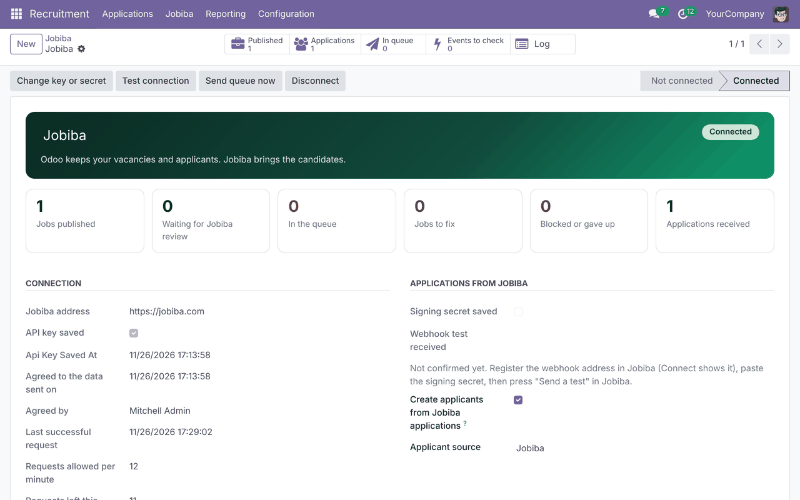
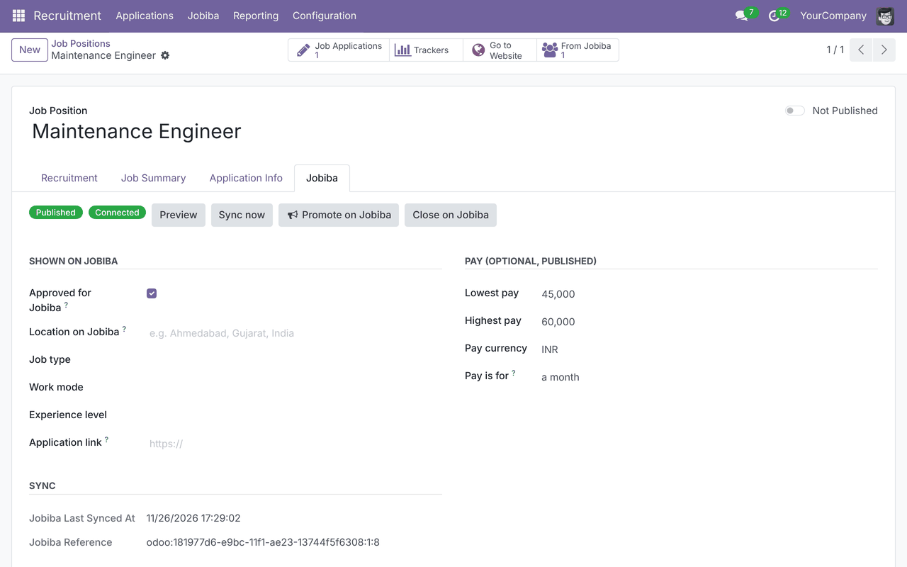
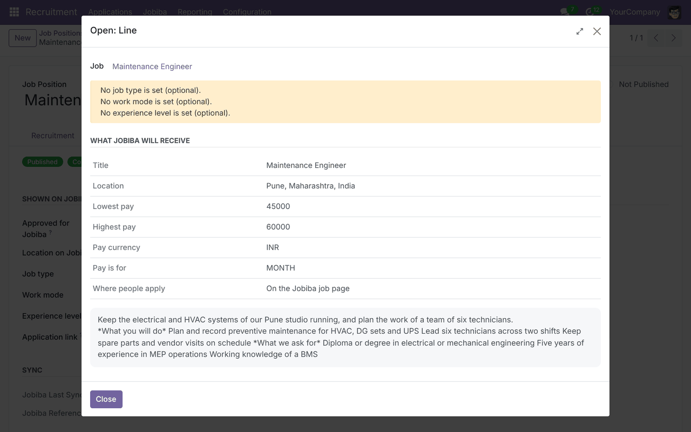
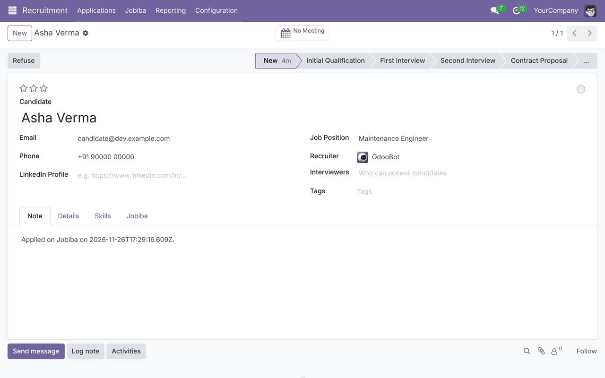

Odoo stays your system of record for vacancies and applicants. Jobiba, a job marketplace, adds reach.




This module needs an external service: jobiba.com. Nothing is sent before an integration administrator ticks "I agree" on the connection screen, which lists the same data as this page and records who agreed and when.
Sent to jobiba.com: your API key with each request. For each job you publish: a reference made of your database ID, company ID and job ID; the title; the location; the description; and, when you fill them in, an application link, the pay with its currency and period, job type, work mode and experience level. The references of jobs you sent and the Jobiba numbers of applications already imported, to ask where they stand. No applicant, employee or other record of your database is sent.
Received from jobiba.com: your plan and limits, the state of the jobs you sent, and your own applications: name, job and stage, and, on a paid Jobiba plan with applicant sync switched on in Jobiba, email, phone, answers and CV files. Signed webhooks are optional and carry an applicant's name, the job and the stage.
Jobiba's privacy policy is at jobiba.com/privacy.
You need: a Jobiba employer account with a confirmed company email (the Free plan holds 3 open jobs through the connection), the connection switched on in Jobiba (Employer dashboard, Integrations), and an Odoo server that can reach jobiba.com over HTTPS. Jobiba plans and payments are handled on Jobiba; this module never asks for card details.
Odoo Online (Standard and One App Free) cannot install custom Python modules, so this module does not run there.
The screenshots show sample data made for the pictures. Support: info@jobiba.com